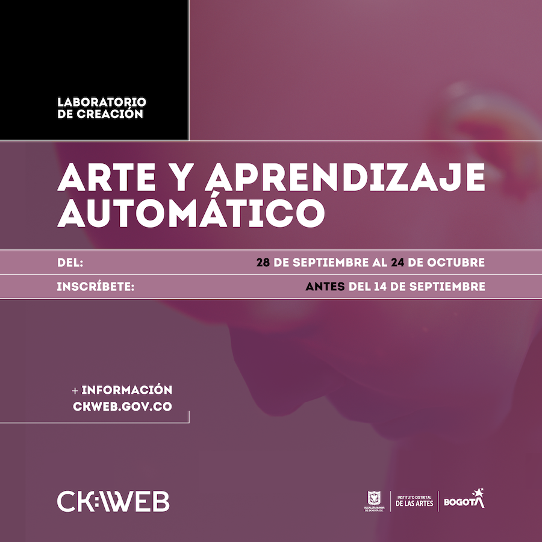

Arte y Aprendizaje Automático (ML)
Laboratorio virtual a cargo de Guido Corallo, Luis Fernando Medina y Margarita Martínez.
Septiembre 28 a octubre 24 de 2020.
Un espacio de creación de obras y proyectos basados en herramientas de Aprendizaje Automático (Machine Learning). Se trata de una actividad orientada a participantes que
posean conocimientos básicos o intermedios y cuenten con un proyecto a desarrollar. Se trabajarán aspectos técnicos, plásticos y poéticos de los proyectos.
Es una actividad orientada a escritores, artistas, periodistas, críticos, curadores o investigadores
residentes en la ciudad de Bogotá.